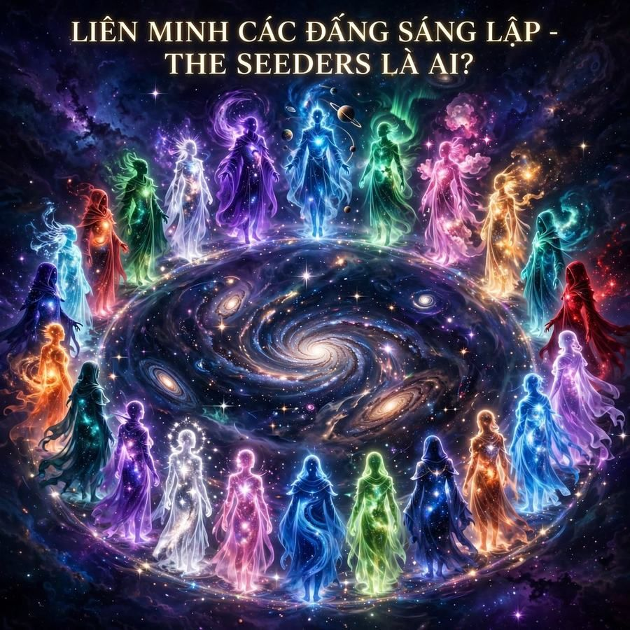
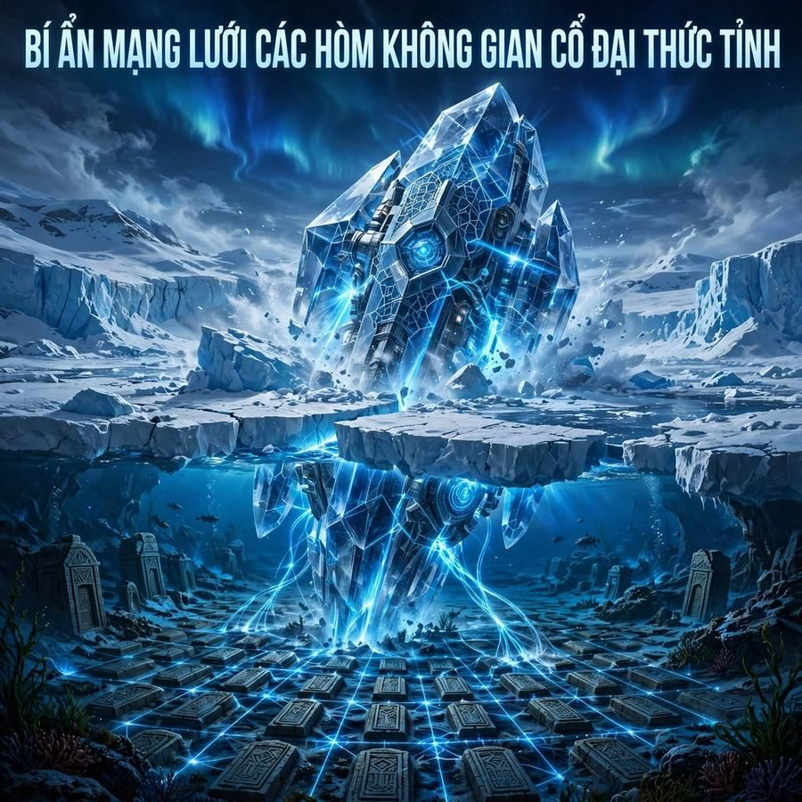
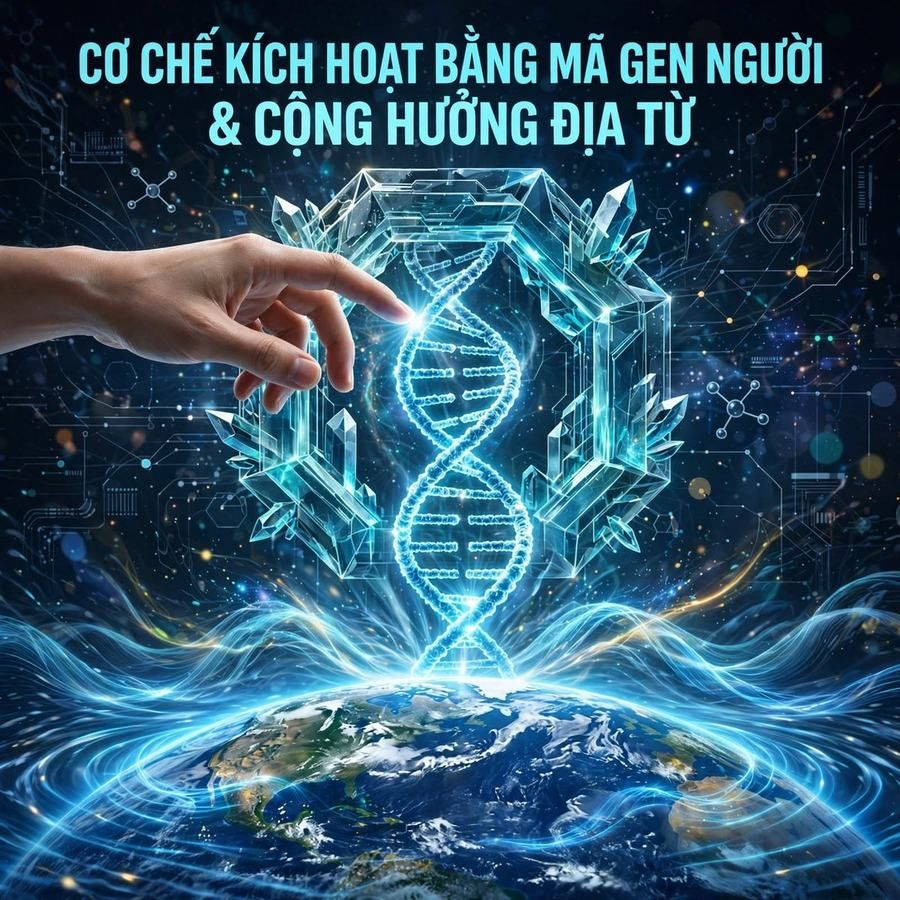
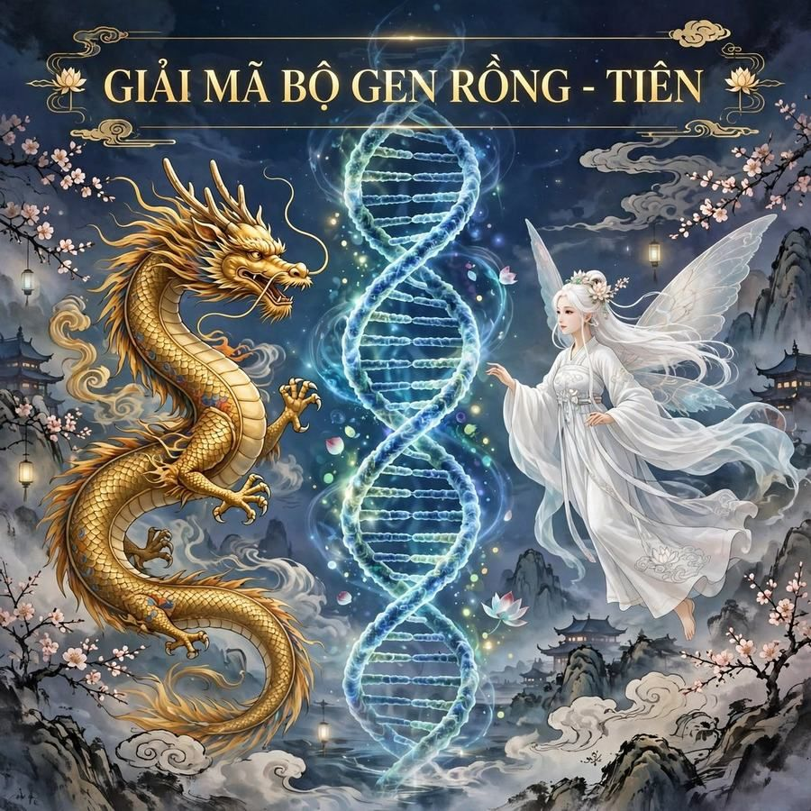
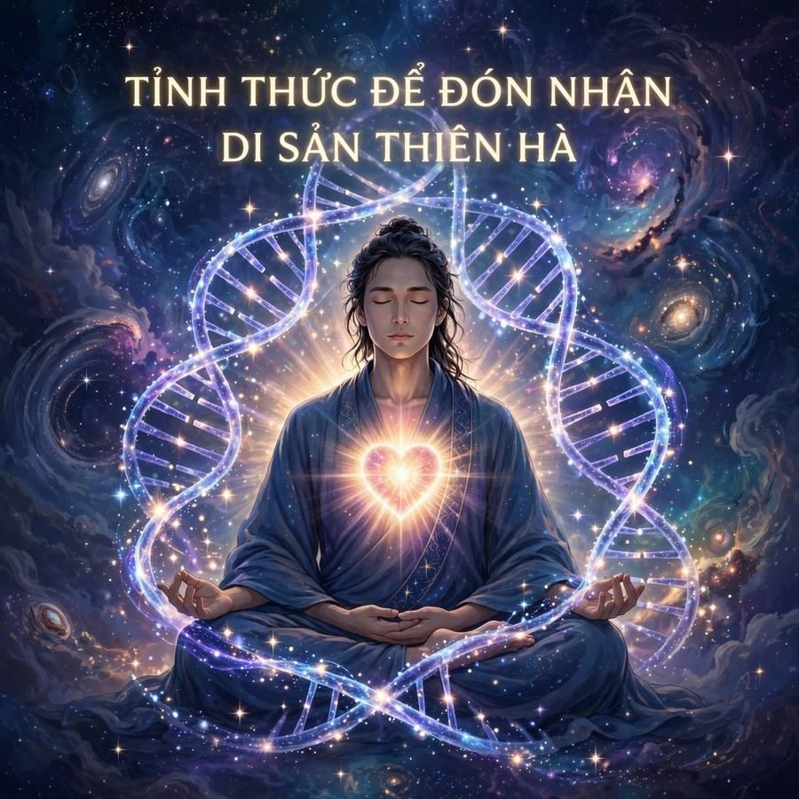

Trang chủ / Chuyên đề 3: Dòng Máu Anunnaki / Kỳ 28
Chuyên đề 3 · Kỳ 28 / 90
LIÊN MINH CÁC ĐẤNG SÁNG LẬP (THE SEEDERS) TÁI NHẬP NGÂN HÀ & BÍ ẨN CÁC HÒM KHÔNG GIAN CỔ ĐẠI

Ở Kỳ 7, chúng ta đã cùng nhau vạch trần ma trận tâm linh của Marduk, thảm họa Tháp Babel hạ thấp tần số thần giao cách cảm và cơ chế thu hoạch năng lượng sợ hãi Loosh vốn đã thao túng nhân loại suốt hàng ngàn năm qua.
Khi các cấu trúc cai trị bóng tối tiêu cực lần lượt bị bóc tách dưới sự quét sạch của Liên Đoàn Thế Giới Thiên Hà, một sự kiện vĩ đại mang tầm vóc Đa Vũ trụ đang diễn ra ngay trong Hệ Mặt Trời của chúng ta: Sự trở lại chính thức của Liên Minh Các Đấng Sáng Lập (Intergalactic Confederation / The Seeders / Paa-Taal) cùng Sự thức tỉnh đồng loạt của Mạng lưới Các Hòm Không Gian Cổ Đại (Space Arks)!
Các Đấng Sáng Lập (The Seeders) là ai trong trật tự Đa Vũ trụ? Tại sao sự hiện diện của 24 chủng tộc gieo mầm nguyên thủy lại đánh dấu thời khắc sụp đổ vĩnh viễn của Ma trận 3D? Bí mật về các đại chiến hạm Space Arks khổng lồ nằm ẩn sâu dưới băng giá Nam Cực, lòng biển Đại Tây Dương, Mặt Trăng và Sao Hỏa đang thức tỉnh ra sao? Và cơ chế kích hoạt bằng mã gen di truyền con người mang lại ý nghĩa lịch sử nào cho vị thế chủ quyền của Trái Đất?
Hãy cùng dấn thân vào Kỳ 8: Liên Minh Các Đấng Sáng Lập Tái Nhập Ngân Hà & Bí Ẩn Các Hòm Không Gian Cổ Đại để mở ra trang sử rực rỡ nhất của Kỷ nguyên Thức Tỉnh!
✦ ✦ ✦1. LIÊN MINH CÁC ĐẤNG SÁNG LẬP (THE SEEDERS / PAA-TAAL) LÀ AI?
Trước khi đi sâu vào sự thức tỉnh của các Hòm Không Gian, chúng ta cần thấu hiểu vị thế tối cao của Liên Minh Các Đấng Sáng Lập trong dòng chảy lịch sử thiên hà.
A. 24 Chủng Tộc Gieo Mầm Khởi Nguyên (The 24 Creator Races)
- Những Kiến Trúc Sư Của Sự Sống: Liên Minh Các Đấng Sáng Lập (Intergalactic Confederation) bao gồm đại diện của 24 chủng tộc tiến hóa tối cao đến từ nhiều thiên hà khác nhau (như Tiên Nữ, Tam Giác, Thiên Lang, các dải mật độ từ 6D đến 12D).
- Nguồn Gốc Của Bản Thiết Kế Paa-Taal: Chính Liên minh này — phối hợp với 9 Thực thể Ý thức Tối cao (The Nine / Council of Nine) — đã kiến tạo nên bản thiết kế di truyền 12 chuỗi DNA Paa-Taal và gieo mầm sự sống hình người lên Trái Đất từ hàng trăm triệu năm trước.
B. Sự Trở Lại Sau Hàng Ngàn Năm Vắng Bóng
- Rút Lui Để Tôn Trọng Thử Nghiệm Tự Do Ý Chí: Sau khi gieo mầm và cài đặt thư viện di truyền, Các Đấng Sáng Lập đã rút về các dải mật độ cao hơn để nhân loại Trái Đất tự do trải nghiệm bài học tiến hóa tâm thức mà không bị can thiệp trực tiếp.
- Tái Nhập Hệ Mặt Trời Từ Cuối Năm 2021: Khi Trái Đất bước vào dải tần số Gamma năng lượng cao từ Trung tâm Ngân Hà và nhân loại bắt đầu thức tỉnh nhận thức, đại hạm đội của Liên Minh Các Đấng Sáng Lập (với hàng ngàn phi thuyền cầu vồng ánh sáng khổng lồ) đã chính thức tái nhập Hệ Mặt Trời, đậu xung quanh quỹ đạo Sao Mộc và Sao Thổ để hỗ trợ quá trình chuyển giao kỷ nguyên!

2. BÍ ẨN MẠNG LƯỚI CÁC HÒM KHÔNG GIAN CỔ ĐẠI (SPACE ARKS) THỨC TỈNH
Song song với sự xuất hiện của hạm đội Seeders trên không gian, một mạng lưới các công nghệ di truyền cổ đại nằm ẩn sâu trong lòng Trái Đất cũng bắt đầu phát ra tín hiệu "thức tỉnh".
A. Bản Chất Của Các Con Tàu Space Arks
- Những Đại Chiến Hạm Tinh Thể Khổng Lồ: Các Hòm Không Gian (Space Arks) không phải là những chiếc rương nhỏ, mà là những siêu phi thuyền hữu cơ bằng hợp kim tinh thể có chiều dài từ vài kilômét đến hàng trăm kilômét. Họ được Các Đấng Sáng Lập chôn giấu sâu dưới lòng đất, đáy đại dương và băng tuyết từ hàng trăm ngàn năm trước.
- Vị Trí Phân Bổ Toàn Cầu: Các con tàu Space Arks nằm tại các chấn điểm từ trường chiến lược: Băng giá Nam Cực, Đáy Hồ Vostok, Vùng biển Bermuda/Đại Tây Dương, Dưới lòng đại dương Florida, Cao nguyên Tây Tạng, Vùng núi Romania, cũng như trên Mặt Trăng, Sao Hỏa và tiểu hành tinh Ceres.
B. Nhiệm Vụ Giải Mật Lịch Sử (Disclosures of JP / US Army Insider)
- Những Chuyến Thám Hiểm Bí Mật 2021-2022: Các nguồn tin giải mật từ nhân chứng JP (Hải quân/Lục quân Mỹ) và các báo cáo quân sự liên sao xác nhận rằng: Các đội thám hiểm hỗn hợp của Liên minh Trái Đất đã được phép tiến vào bên trong các con tàu Space Arks tại Nam Cực, Florida và Đại Tây Dương.
- Cảnh Tượng Bên Trong Space Arks: Bên trong các con tàu là các đô thị tinh thể thu nhỏ, các thư viện di truyền sống, hệ thống ánh sáng sinh học không cần nhiên liệu và các buồng ngưng trệ ngủ đông chứa các sinh mệnh khổng lồ đang dần mở mắt!

3. CƠ CHẾ KÍCH HOẠT BẰNG MÃ GEN NGƯỜI & SỰ CỘNG HƯỞNG ĐỊA TỪ
Điều kỳ diệu nhất của công nghệ Space Arks chính là cơ chế mở khóa hoàn toàn dựa trên Tần số Nhận thức & DNA con người.
A. Không Thể Mở Bằng Công Nghệ Quân Sự Tiêu Cực
- Lá Chắn Bảo Vệ Bằng Tần SỐ Sinh Học: Trong quá khứ, các lực lượng kiểm soát bóng tối từng nhiều lần tìm cách khoan đục hay cướp phá các con tàu Space Arks để chiếm đoạt vũ khí. Tuy nhiên, mọi nỗ lực đều thất bại vì tường năng lượng tinh thể của tàu sẽ thiêu rụi hoặc đẩy lùi bất kỳ sinh mệnh nào mang tần số sợ hãi và căm thù.
- Chìa Khóa DNA Tương Thích: Con tàu chỉ phát sáng và phản ứng khi một cá thể con người mang dải nhận thức từ bi, luân xa tim mở rộng và sở hữu mã gen Paa-Taal tương thích bước vào. DNA của con người chính là "mật mã sinh học" duy nhất để kích hoạt hệ thống!
B. Sự Cộng Hưởng Làm Sụp Đổ Lưới 3D
- Phát Tán Sóng Tần Số Tối Cao: Khi các Space Arks tại Nam Cực và Đại Tây Dương thức tỉnh, chúng phát ra các chùm sóng năng lượng vô hướng tần số cực cao. Các chùm sóng này kết nối với nhau qua mạng lưới Ley Lines, chạy xuyên qua tâm Trái Đất và trực tiếp đập tan các mắt lưới từ trường phong tỏa 3D còn sót lại!

4. SỰ BÀN GIAO CHỦ QUYỀN & KỶ NGUYÊN BẠCH NHẬT HÓA (FULL DISCLOSURE)
Sự trở lại của Liên Minh Các Đấng Sáng Lập và sự thức tỉnh của các Space Arks đánh dấu một bước ngoặt chưa từng có cho tương lai nhân loại.
A. Không Đến Để "CỨU", Mà Để Trao Trả Chủ Quyền
- Tôn Trọng Sự Tự Lập Của Nhân Loại: Các Đấng Sáng Lập và Liên Đoàn Thế Giới Thiên Hà khẳng định họ không đến để đóng vai "Đấng Cứu Thế" đòi hỏi sự thờ phụng. Họ trở lại để trao trả lại Quyền Chủ Quyền Tối Cao (Planetary Sovereignty) cho con người Trái Đất, giúp chúng ta tiếp quản lại hành tinh của chính mình.
B. Chuẩn Bị Cho Cuộc Giao Thoa Văn Minh Liên Sao
- Khai Mở Tri Thức Cổ Đại: Tri thức lưu trữ trong các Space Arks — bao gồm công nghệ Năng lượng Điểm Không, Y học Giường Lượng Tử (Med Beds), Du hành Siêu Chiều và Lịch sử Nguyên thủy — sẽ dần được công khai cho nhân loại khi tần số chung của Trái Đất đạt mức ổn định.
- Trở Thành Thành Viên Chính Thức Của Liên Minh Thiên Hà: Nhân loại Trái Đất đang chuẩn bị khép lại giai đoạn "cô lập 3D" để chính thức bước lên ngài vị đại sứ, đại diện cho Thư viện Sinh học Sống 22 mã gen tham gia vào Hội đồng Thiên Hà!

5. LỜI KẾT KỲ 8: TỈNH THỨC ĐỂ ĐÓN NHẬN DI SẢN THIÊN HÀ
Nhìn lại sự trở lại của Liên Minh Các Đấng Sáng Lập và sự thức tỉnh của các Hòm Không Gian Cổ Đại, chúng ta rút ra bài học nhận thức vô giá:
- Bạn Chính Là Chìa Khóa Của Kỷ Nguyên Mới: Sự thức tỉnh của các Space Arks không nằm ở những sự kiện xa xôi ngoài không gian, mà nằm ngay trong sự chuyển hóa nhận thức của chính bạn. Khi bạn làm sạch tâm trí, nuôi dưỡng lòng từ bi và sống trong sự bình thản, bạn đang góp phần phát ra dải tần số kích hoạt mạng lưới năng lượng toàn cầu!
- Tự Tin Bước Vào Kỷ Nguyên Mới: Thời đại của sự sợ hãi, chia rẽ và nô dịch đã vĩnh viễn khép lại. Hãy tự tin nâng cao tần số, mở rộng trái tim và sẵn sàng đón nhận di sản thiêng liêng mà Các Đấng Sáng Lập đã gửi gắm trong từng tế bào của bạn!
